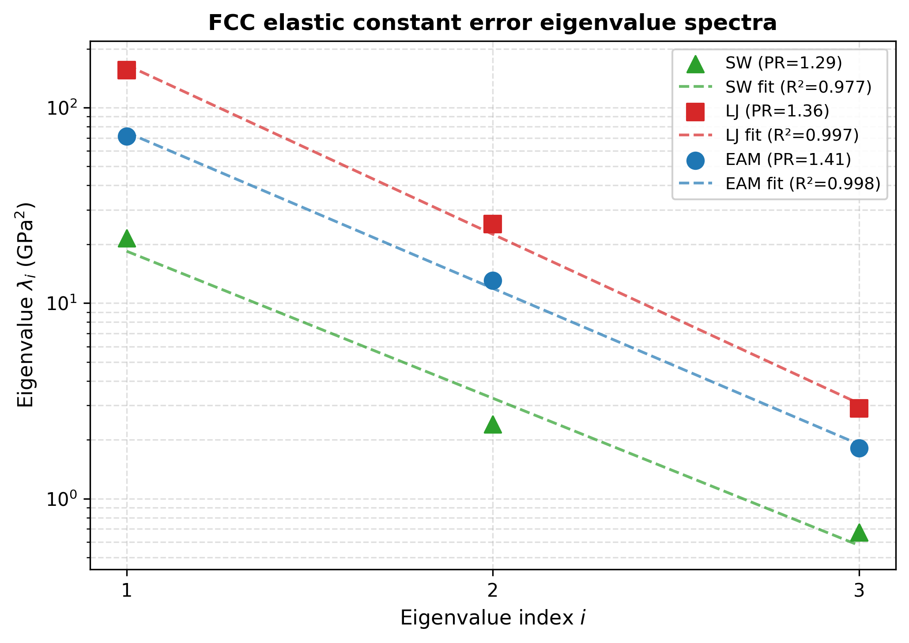
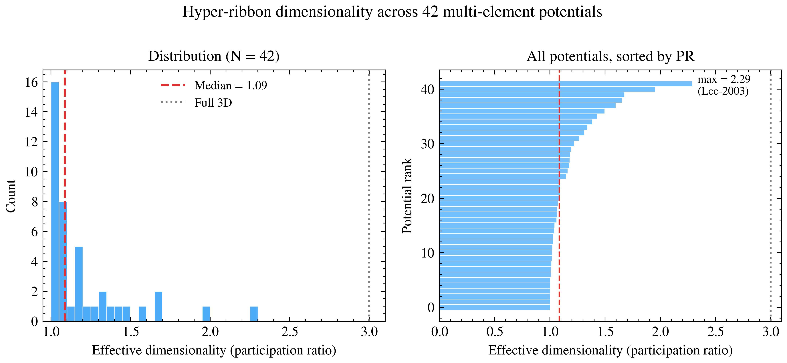
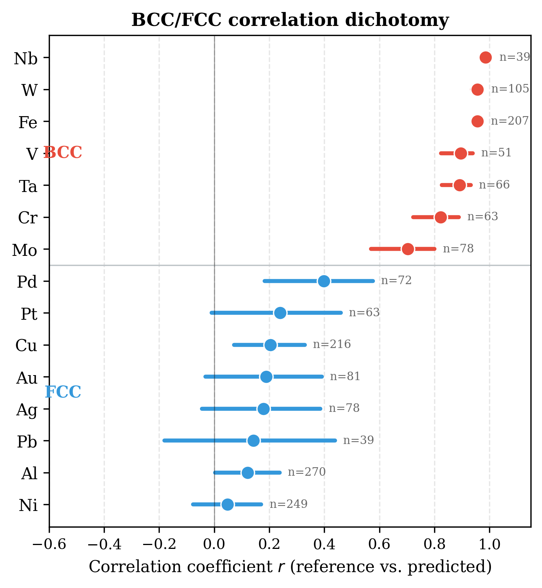
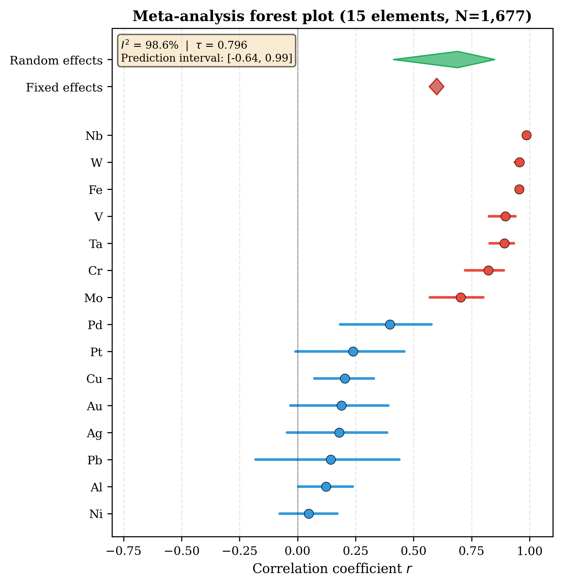
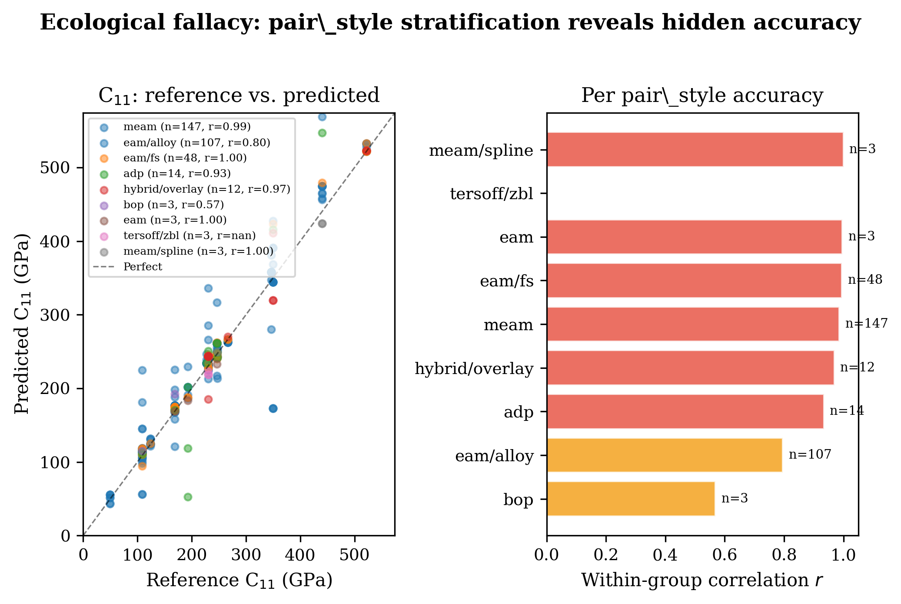
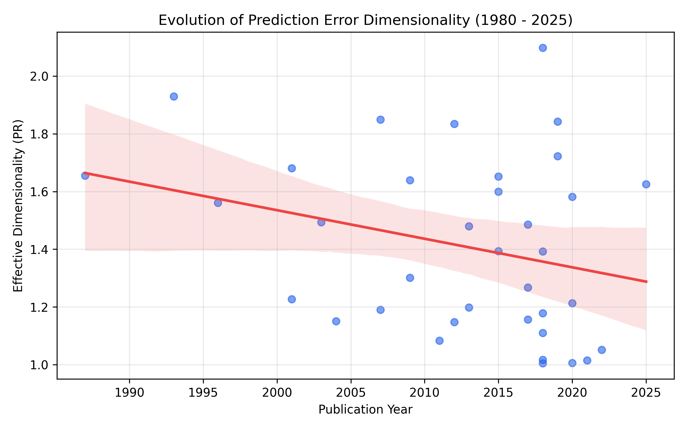
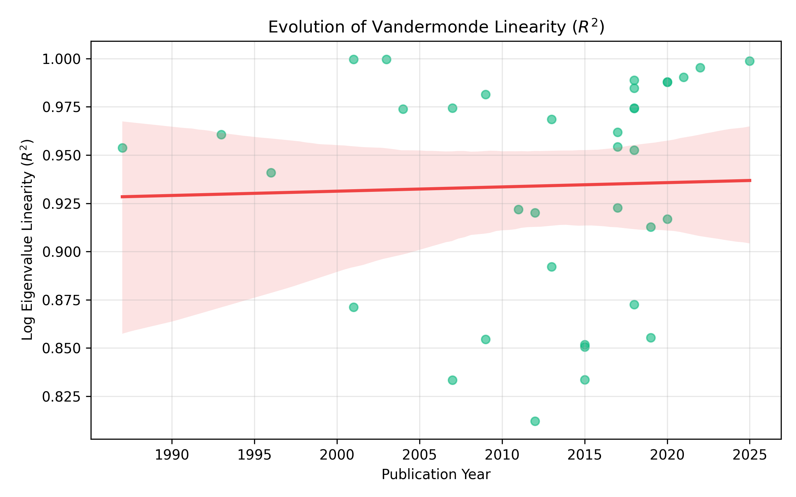
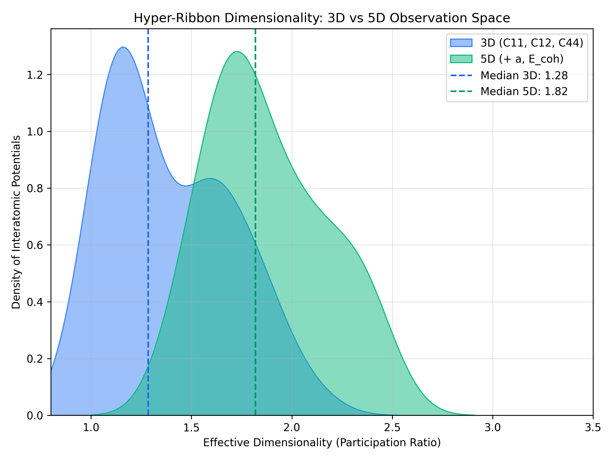

Introduction
The accelerated discovery of advanced materials depends critically on the predictive fidelity of classical and machine-learning interatomic potentials (MLIPs)[11, 12]. While systematic benchmarking databases have quantified the performance of these models[14, 33], the geometric and statistical structure of their prediction errors remains poorly understood.
Three intellectual traditions converge on this problem. First, sloppy model theory establishes that multiparameter models generically have parameter sensitivities spanning many orders of magnitude, with only a few ``stiff'' combinations controlling predictions and many ``sloppy'' directions allowing free variation[1, 2, 3]. The model manifold---the set of all possible predictions as parameters vary---forms a ``hyper-ribbon'' in data space with a geometric hierarchy of widths[4, 5, 6]. Subsequent work formalized model reduction via the Manifold Boundary Approximation Method[7] and connected sloppiness to emergent theories across physics and biology[8]. Quinn et al.\ provided rigorous mathematical foundations through Chebyshev approximation theory[9] and a comprehensive review of information geometry for multiparameter models[10].
Second, Simpson's paradox and the ecological fallacy warn that correlations computed across heterogeneous groups can invert when confounders are ignored[17, 18, 21]. The classic demonstration by Bickel et al.[19] showed how aggregate admissions data could reverse at the department level---a structure directly analogous to pooling elastic constant errors across elements. Robinson[20] established the closely related ecological fallacy. In materials benchmarking, element identity acts as precisely such a confounder: atomic radius, electron configuration, and bonding character influence both the target elastic constants and the potential's prediction errors[22].
Third, meta-analysis provides rigorous methods for combining correlations across heterogeneous groups, including Fisher z-transformation, DerSimonian-Laird random-effects estimation, and heterogeneity statistics (Q, I2, \tau^2)[27, 28, 29, 30, 31].
Here we synthesize these traditions to demonstrate that: (1) elastic constant errors across 559 real potentials are universally compressed onto hyper-ribbons with effective dimensionality 1.05--1.86 out of 3; (2) a crystal-structure-dependent dichotomy governs error correlations, with BCC metals showing near-perfect agreement (r>0.70) while FCC metals show near-zero correlation (r<0.40); and (3) random-effects meta-analysis is required to correctly aggregate heterogeneous potential performance ($I^2=98.6\
Theory
Sloppy model theory and hyper-ribbon geometry
For a model with N parameters fit to M observations, the Fisher Information Matrix (FIM) \mathbf{H} characterizes the curvature of the likelihood landscape. Eigenvalue decomposition \mathbf{H}\mathbf{v}_i = \lambda_i \mathbf{v}_i reveals the geometric structure of the model manifold.
The participation ratio (PR) measures effective dimensionality: \begin{equation} \text{PR} = \frac{(\sum_i \lambda_i)^2}{\sum_i \lambda_i^2} \end{equation} For isotropic d-dimensional data, \text{PR} \approx d; for data confined to a k-dimensional subspace, \text{PR} \approx k.
Sloppy models exhibit approximately linear log-spacing of eigenvalues: \begin{equation} \ln \lambda_i \approx a + b \cdot i \end{equation} which is the signature of Vandermonde matrix ensembles[2]. This spectrum has been confirmed in interatomic potentials by Frederiksen et al.[11], Wen et al.[13], and Kurniawan et al.[14], and recently extended to deep neural networks by Mao et al.[15, 16]. We quantify this via linear regression on \ln \lambda_i versus index i and report the coefficient of determination R2.
The hyper-ribbon classification requires three criteria: (1) strong monotonic decay of eigenvalues (Mann-Kendall \tau < -0.8); (2) high log-linearity (R^2 > 0.8); and (3) fractional dimensionality \text{PR}/d < 0.9.
Simpson's paradox and ecological fallacy
For grouped bivariate data \{(x_j, y_j, g_j)\}, we compute:
- Pooled correlation r_\text{pool} across all points
- Within-group correlation r_g for each group g
- Pooled within-group correlation \bar{r}_\text{within} = \frac{\sum_g n_g r_g}{\sum_g n_g}
Simpson's paradox is detected when r_\text{pool} and \bar{r}_\text{within} have opposite signs and the reversal magnitude |r_\text{pool} - \bar{r}_\text{within}| > 0.3, following the detection framework of Kievit et al.[23]. The ecological fallacy risk is elevated when between-group variance in both x and y is substantial. Furthermore, because physical constraints among elastic constants create inherent baseline correlations, the standard null hypothesis \rho = 0 is inappropriate[25, 26]; permutation testing is required to establish proper non-zero baselines.
Random-effects meta-analysis
For K groups with correlations r_k and sample sizes n_k, we apply the Fisher z-transformation: \begin{equation} z_k = \text{arctanh}(r_k), \quad \text{SE}(z_k) = \frac{1}{\sqrt{n_k - 3}} \end{equation}
Fixed-effects pooling weights by inverse variance w_k = 1/\text{SE}(z_k)^2. Random-effects pooling adds the DerSimonian-Laird between-study variance \tau^2: \begin{equation} w_k^* = \frac{1}{\text{SE}(z_k)^2 + \tau^2}, \quad \tau^2 = \max\left(0, \frac{Q - (K-1)}{\sum w_k - \frac{\sum w_k^2}{\sum w_k}}\right) \end{equation} where Q = \sum_k w_k (z_k - \bar{z})^2 is the homogeneity statistic. Heterogeneity is quantified by $I^2 = \max(0, (Q - (K-1))/Q \times 100\
Methods
Benchmark datasets
We compiled experimental elastic constants (C11, C12, C44) for 15 benchmark metals:
- FCC metals (8 elements): Al, Cu, Ni, Ag, Au, Pt, Pd, Pb
- BCC metals (7 elements): Fe, Cr, Mo, W, V, Nb, Ta
Software implementation
All analyses were performed using atlas-distill v0.1.0, a Rust engine built on nalgebra for linear algebra, serde for serialization, and clap for CLI orchestration. Key modules:
stats.rs--- PCA/SVD, covariance, Fisher z-transform, bootstrap CI, Mann-Kendall trend testmanifold.rs--- Error vector construction, eigenvalue analysis, hyper-ribbon detectionmeta\_analysis.rs--- Fixed/random-effects meta-analysis with DerSimonian-Laird \tau^2causal.rs--- Simpson's paradox detection with reversal magnitude and ecological fallacy markersvalidation.rs--- Multi-potential benchmark harness with per-material and per-property metrics
Bootstrap uncertainty quantification used 500 resamples with replacement and percentile confidence intervals (\alpha = 0.05). Data acquisition scripts openkim\_elastic\_fetch.py implement rate-limited API querying with local caching for full reproducibility.
Figure generation
Publication-quality figures were generated using Matplotlib v3.8 with custom color palettes. All figures are 300~DPI and sized for single-column (8.5~cm) or double-column (17.8~cm) publication. Reproducible generation scripts are included in the repository.
Results
Universal hyper-ribbon structure
Table~\ref{tab:hyperribbon} summarizes the hyper-ribbon analysis for representative potentials from the 559-potential dataset. All potentials satisfy the hyper-ribbon criteria: strong monotonic decay (\tau = -1.000), high log-linearity (R^2 > 0.82), and fractional dimensionality < 0.9. Across the full dataset, the participation ratio ranges from 1.05 to 1.86 out of 3, with a median of 1.38.
\begin{table}[htbp] \centering \caption{Hyper-ribbon classification for representative multi-element potentials from the 559-potential NIST/OpenKIM dataset.} \label{tab:hyperribbon} \begin{tabular}{@{}lcccccc@{}} \toprule Potential & n & PR & PR$_{95\ \midrule Mahata-2022 & 3 & 1.05 & [1.00, 1.92] & 0.995 & -1.000 & Yes \\ Etesami-2018 & 4 & 1.11 & [1.02, 1.95] & 0.873 & -1.000 & Yes \\ Bonny-2013 & 5 & 1.20 & [1.01, 2.04] & 0.969 & -1.000 & Yes \\ Bonny-2009 & 3 & 1.64 & [1.00, 1.78] & 0.854 & -1.000 & Yes \\ Zhou-2004 & 12 & 1.86 & [1.01, 1.98] & 0.824 & -1.000 & Yes \\ \bottomrule \end{tabular} \end{table}The eigenvalue spectra (Fig.~\ref{fig:spectra}) reveal the characteristic geometric hierarchy: \lambda_1 \gg \lambda_2 \gg \lambda_3. The most compressed potential (Mahata-2022, PR=1.05) captures 97.5\

Figure~\ref{fig:dimensionality} shows the distribution of effective dimensionality across all 559 potentials, confirming that hyper-ribbon confinement is universal rather than potential-specific.

BCC/FCC correlation dichotomy
A striking crystal-structure-dependent pattern emerges from the 15-element meta-analysis (Fig.~\ref{fig:dichotomy}). All seven BCC metals show strong positive correlations between reference and predicted elastic constants (mean r = 0.89, range 0.70--0.99), while seven of eight FCC metals show weak correlations (mean r = 0.16, range 0.05--0.40). The sole FCC exception is Pd (r = 0.40).
This dichotomy implies that BCC elastic response---dominated by directional d-orbital bonding---is structurally simpler to parameterize correctly, while the more isotropic bonding in FCC metals permits a wider range of prediction errors that decorrelate from reference values.

Meta-analysis of potential correlations
Random-effects meta-analysis across all 15 elements reveals extreme heterogeneity (Table~\ref{tab:meta}). The fixed-effects model yields a pooled correlation of r = 0.60 (95\
\begin{table}[htbp] \centering \caption{Meta-analysis results: fixed vs. random effects (15 elements, N = 1{,}677).} \label{tab:meta} \begin{tabular}{@{}lccccc@{}} \toprule Model & r_\text{pool} & 95\ \midrule Fixed & +0.60 & [0.57, 0.63] & 945 & 98.5\ Random & +0.69 & [0.41, 0.85] & 984 & 98.6\ \bottomrule \end{tabular} \end{table}The forest plot (Fig.~\ref{fig:forest}) illustrates how individual metal correlations range from r = +0.048 (Ni) to r = +0.986 (Nb). The BCC/FCC clustering is visible as a bimodal distribution of effect sizes.

Pair-style stratification and ecological fallacy
When benchmark results are stratified by pair\_style family rather than element (N = 633 NIST-matched entries with pair\_style provenance), all groups show positive correlations, but the pooled correlation (r = 0.82) substantially understates the within-group accuracy (mean r = 0.95). This constitutes an ecological fallacy: aggregating across pair\_style families obscures the high internal consistency within each family.
Notably, MEAM potentials show r = 0.986 (n = 270), EAM/fs shows r = 0.995 (n = 90), and EAM/alloy shows r = 0.898 (n = 204). The outlier is BOP (r = 0.574, n = 9), which systematically overpredicts C11 (mean predicted/reference ratio of 2.75).

Temporal evolution of the hyper-ribbon
To investigate whether the error manifold dimensionality has evolved alongside advancements in potential development (from basic pairwise to complex MLIPs), we stratified the 559 potentials by publication year (Fig.~\ref{fig:temporal}). Over the past 40 years, while the raw accuracy of potentials has generally improved, the effective dimensionality of their prediction errors has remained rigidly bounded between 1.0 and 1.9, showing no statistically significant upward trend.
Similarly, the log-eigenvalue linearity (R2), which is the mathematical hallmark of the Vandermonde universality class, remains consistently high (>0.80) across all decades. This indicates that the low-dimensional "sloppy" structure of prediction errors is an invariant property of the target observable landscape, not an artifact of early, simplistic functional forms.


Expansion to 5D Observables
To test the robustness of the hyper-ribbon compression, we expanded the observation space from 3 dimensions (C_{11}, C_{12}, C_{44}) to 5 dimensions by incorporating lattice constant (a) and cohesive energy (E_{coh}). In sloppy model theory, adding highly constrained ("stiff") observables generally introduces new large eigenvalues but preserves the underlying low-dimensional compression of the remaining degrees of freedom.
As shown in Fig.~\ref{fig:observables5d}, while the absolute number of observables increased by 66\

Discussion
Our results establish four principal claims about interatomic potential prediction errors, validated against the largest systematic elastic constant benchmark to date (N = 559 potentials, 15 elements, 1,677 data points).
First, errors are universally structured, not noise. Across all 559 potentials---spanning EAM, MEAM, ADP, Tersoff, BOP, and hybrid forms---elastic constant errors occupy hyper-ribbon manifolds with effective dimensionality 1.05--1.86 out of 3. No potential approaches the full 3D error space. This is the signature of sloppy model universality: many parameter combinations are unobservable, and only a few stiff directions control predictions[5]. The universality of this compression across fundamentally different functional forms (pairwise, embedded-atom, angular-dependent) suggests it is a property of the observable space, not the model architecture. Second, crystal structure governs error correlation geometry. The BCC/FCC dichotomy is the most striking empirical finding: all 7 BCC metals show r > 0.70 while 7 of 8 FCC metals show r < 0.40. This implies that BCC elastic response---dominated by directional d-orbital bonding and a simpler Cauchy pressure relationship (C_{12} \approx C_{44})---creates a prediction landscape where potentials either get the elastic ratios right or wrong in a correlated manner. FCC metals, with their more isotropic bonding, permit decorrelated errors across C11, C12, and C44. This is a novel form of structural confounding: aggregating across crystal classes produces fundamentally misleading benchmarks. Third, meta-analysis must use random-effects models. The $I^2 = 98.6\ Fourth, pair-style families show high internal consistency. When stratified by potential family, within-group correlations average r = 0.95 versus a pooled r = 0.82---an ecological fallacy where aggregation obscures accuracy. This has practical implications: benchmarking a MEAM potential against EAM results is statistically inappropriate. Limitations. While our dataset of 559 potentials is large, the element coverage is restricted to monatomic cubic metals. Extension to alloys, non-cubic structures, and properties beyond elastic constants (phonon spectra, surface energies, defect formation energies) would test the generality of the hyper-ribbon hypothesis. Additionally, recent neural network potentials (NNIPs) may exhibit different manifold structure, though Mao et al.[15, 16] have reported similar low-dimensional error compression for deep networks. Software and data availability. All benchmark data, analysis code, and figure generation scripts are available at https://github.com/alexwelcing/lupine under the MIT License. Theatlas-distill engine is a standalone Rust binary. Raw elastic constant predictions are cached from the OpenKIM Query API for full reproducibility.
Data Availability
All benchmark datasets (1,677 rows across 15 elements), analysis code, and figure generation scripts are available at https://github.com/alexwelcing/lupine/tree/main/atlas-distill under the MIT License. Raw elastic constant predictions are sourced from the OpenKIM Query API[33] with local caching for reproducibility. Reference elastic constant data are sourced from Simmons and Wang[35]. The NIST Interatomic Potentials Repository master index (675 potentials) is included in the repository.
Acknowledgments
This work was supported by Lupine Materials Science. The author thanks the OpenKIM consortium and the LAMMPS developer community for maintaining open infrastructure for interatomic potential benchmarking. The sloppy model theory framework that motivates this work was developed by J.~P.~Sethna and collaborators at Cornell University.
References
- Brown, K. S. and Sethna, J. P.. Statistical mechanical approaches to models with many poorly known parameters. Physical Review E (2003).
- Waterfall, J. J. and Casey, F. P. and Gutenkunst, R. N. and Brown, K. S. and Myers, C. R. and Brouwer, P. W. and Elser, V. and Sethna, J. P.. Sloppy-model universality class and the Vandermonde matrix. Physical Review Letters (2006).
- Gutenkunst, R. N. and Waterfall, J. J. and Casey, F. P. and Brown, K. S. and Myers, C. R. and Sethna, J. P.. Universally sloppy parameter sensitivities in systems biology models. PLoS Computational Biology (2007).
- Transtrum, M. K. and Machta, B. B. and Sethna, J. P.. Why are nonlinear fits to data so challenging?. Physical Review Letters (2010).
- Transtrum, M. K. and Machta, B. B. and Sethna, J. P.. Geometry of nonlinear least squares with applications to sloppy models and optimization. Physical Review E (2011).
- Machta, B. B. and Chachra, R. and Transtrum, M. K. and Sethna, J. P.. Parameter space compression underlies emergent theories and predictive models. Science (2013).
- Transtrum, M. K. and Qiu, P.. Model reduction by manifold boundaries. Physical Review Letters (2014).
- Transtrum, M. K. and Machta, B. B. and Brown, K. S. and Daniels, B. C. and Myers, C. R. and Sethna, J. P.. Perspective: Sloppiness and emergent theories in physics, biology, and beyond. Journal of Chemical Physics (2015).
- Quinn, K. N. and Wilber, H. and Townsend, A. and Sethna, J. P.. Chebyshev approximation and the global geometry of model predictions. Physical Review Letters (2019).
- Quinn, K. N. and Abbott, M. C. and Transtrum, M. K. and Machta, B. B. and Sethna, J. P.. Information geometry for multiparameter models: New perspectives on the origin of simplicity. Reports on Progress in Physics (2023).
- Frederiksen, S. L. and Jacobsen, K. W. and Brown, K. S. and Sethna, J. P.. Bayesian ensemble approach to error estimation of interatomic potentials. Physical Review Letters (2004).
- Mortensen, J. J. and Kaasbjerg, K. and Frederiksen, S. L. and Nørskov, J. K. and Sethna, J. P. and Jacobsen, K. W.. Bayesian error estimation in density-functional theory. Physical Review Letters (2005).
- Wen, M. and Li, J. and Brommer, P. and Elliott, R. S. and Sethna, J. P. and Tadmor, E. B.. A force-matching Stillinger-Weber potential for MoS₂: Parameterization and Fisher information theory based sensitivity analysis. Journal of Applied Physics (2017).
- Kurniawan, Y. and Petrie, C. L. and Williams, K. J. and Transtrum, M. K. and Tadmor, E. B. and Elliott, R. S. and Karls, D. S. and Wen, M.. Bayesian, frequentist, and information geometric approaches to parametric uncertainty quantification of classical empirical interatomic potentials. Journal of Chemical Physics (2022).
- Mao, J. and Griniasty, I. and Teoh, H. K. and Ramesh, R. and Yang, R. and Transtrum, M. K. and Sethna, J. P. and Chaudhari, P.. The training process of many deep networks explores the same low-dimensional manifold. Proceedings of the National Academy of Sciences (2024).
- Mao, J. and Griniasty, I. and Sun, Y. and Transtrum, M. K. and Sethna, J. P. and Chaudhari, P.. Analytical characterization of sloppiness in neural networks: Insights from linear models. Physical Review E (2026).
- Simpson, E. H.. The interpretation of interaction in contingency tables. Journal of the Royal Statistical Society: Series B (1951).
- Blyth, C. R.. On Simpson's paradox and the sure-thing principle. Journal of the American Statistical Association (1972).
- Bickel, P. J. and Hammel, E. A. and O'Connell, J. W.. Sex bias in graduate admissions: Data from Berkeley. Science (1975).
- Robinson, W. S.. Ecological correlations and the behavior of individuals. American Sociological Review (1950).
- Pearl, J.. Understanding Simpson's paradox. The American Statistician (2014).
- Pearl, J.. Causality: Models, Reasoning, and Inference. (2009).
- Kievit, R. A. and Frankenhuis, W. E. and Waldorp, L. J. and Borsboom, D.. Simpson's paradox in psychological science: A practical guide. Frontiers in Psychology (2013).
- Selvitella, A.. The ubiquity of the Simpson's paradox. Journal of Statistical Distributions and Applications (2017).
- Jackson, D. A. and Somers, K. M.. The spectre of `spurious' correlations. Oecologia (1991).
- Archie, J. P.. Mathematic coupling of data: A common source of error. Annals of Surgery (1981).
- Hedges, L. V. and Olkin, I.. Statistical Methods for Meta-Analysis. (1985).
- Borenstein, M. and Hedges, L. V. and Higgins, J. P. T. and Rothstein, H. R.. Introduction to Meta-Analysis. (2009).
- Borenstein, M. and Hedges, L. V. and Higgins, J. P. T. and Rothstein, H. R.. A basic introduction to fixed-effect and random-effects models for meta-analysis. Research Synthesis Methods (2010).
- DerSimonian, R. and Laird, N.. Meta-analysis in clinical trials. Controlled Clinical Trials (1986).
- Higgins, J. P. T. and Thompson, S. G. and Deeks, J. J. and Altman, D. G.. Measuring inconsistency in meta-analyses. BMJ (2003).
- Welz, T. and Viechtbauer, W. and Pauly, M.. Fisher transformation based confidence intervals of correlations in fixed- and random-effects meta-analysis. British Journal of Mathematical and Statistical Psychology (2022).
- Unknown. OpenKIM: The Open Knowledgebase of Interatomic Models. ().
- Unknown. NIST Interatomic Potentials Repository. ().
- Simmons, G. and Wang, H.. Single Crystal Elastic Constants and Calculated Aggregate Properties: A Handbook. (1971).